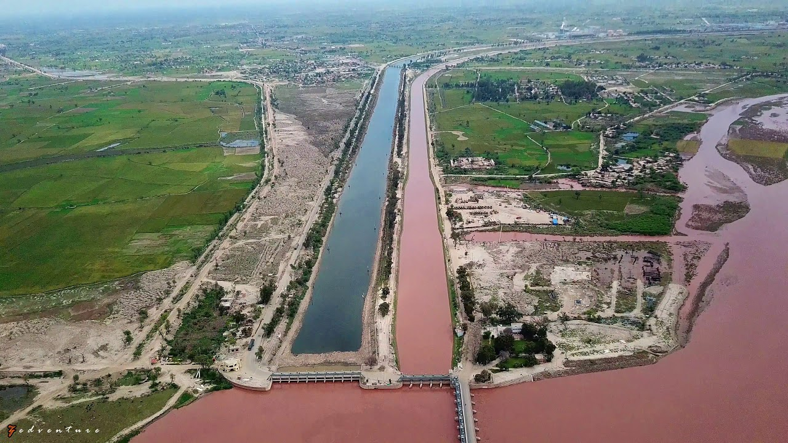
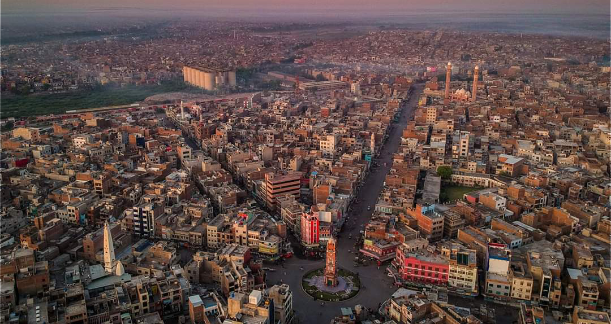

Explore Jhang
Discover the beauty, culture, and heritage of Jhang through these iconic landmarks and scenic spots.
Chenab College Jhang, one of the largest educational institutions in Pakistan, spans an impressive 150 acres. Catering to students from nursery to 12th grade, including O and A levels, it features 7 teaching blocks, a massive multipurpose hall, 3 well-stocked libraries, 4 state-of-the-art laboratories, a swimming pool, and multiple sports grounds and courts. A true hub of academic and extracurricular excellence.

Trimmu Barrage, located just 18 km from Jhang, is the iconic point where the mighty Chenab River converges with the River Jhelum. A vital landmark, it stands as a testament to the region's rich hydrological significance.

The Shrine of Heer and Ranjha, a symbol of eternal love, attracts thousands of visitors each year. This historic site stands as a poignant reminder of their legendary romance and holds deep cultural significance for the region.
